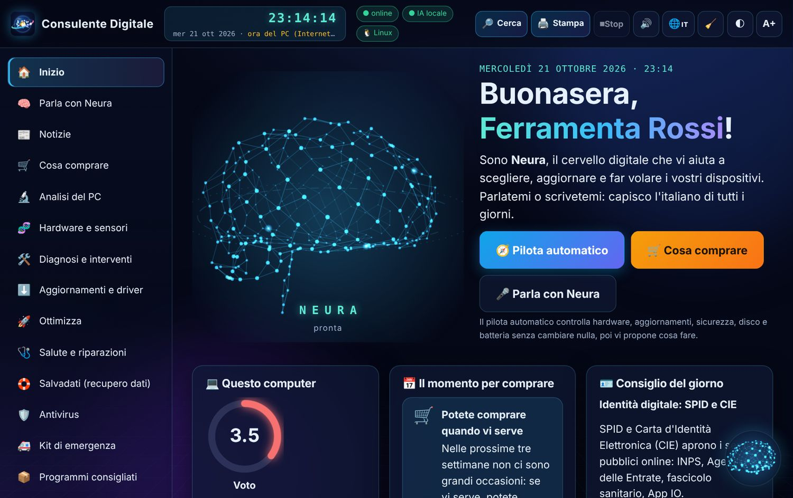
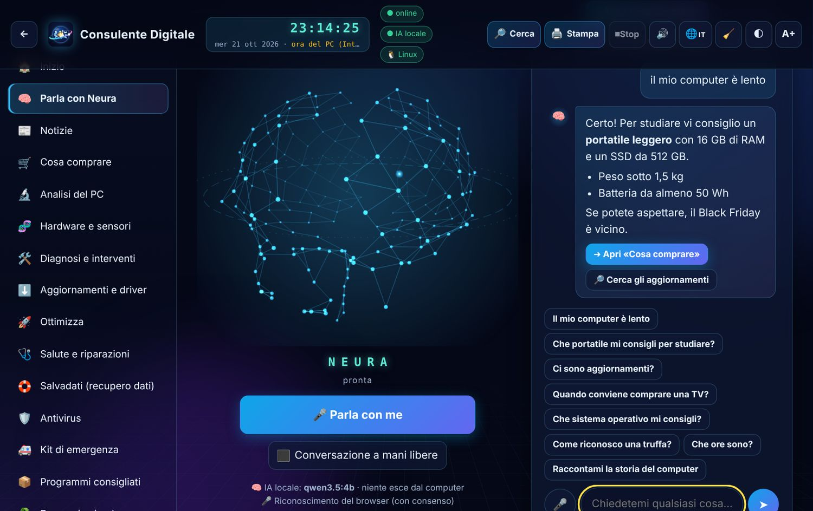
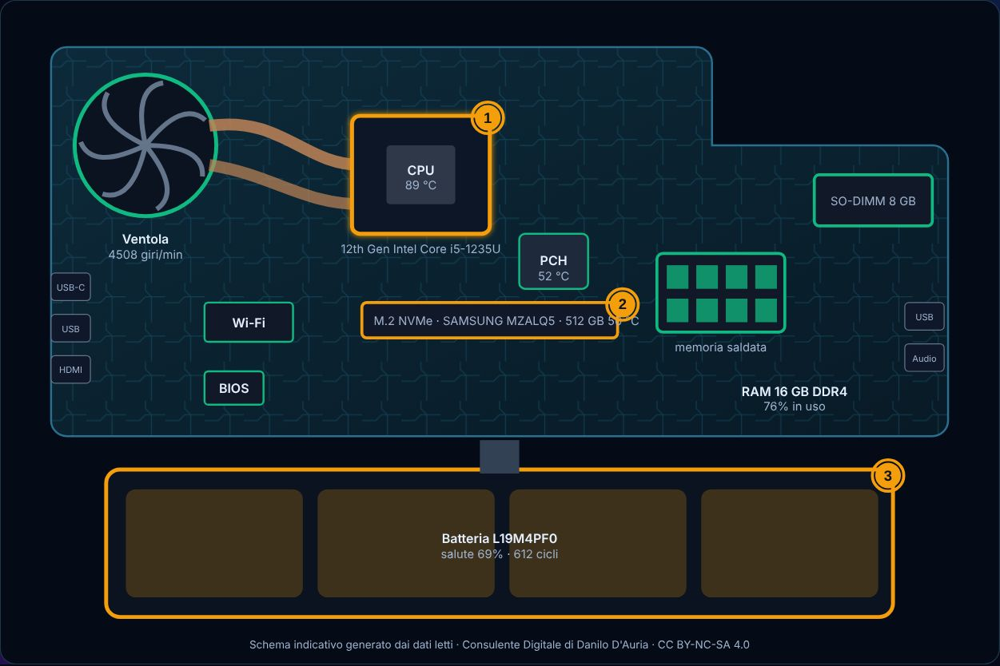
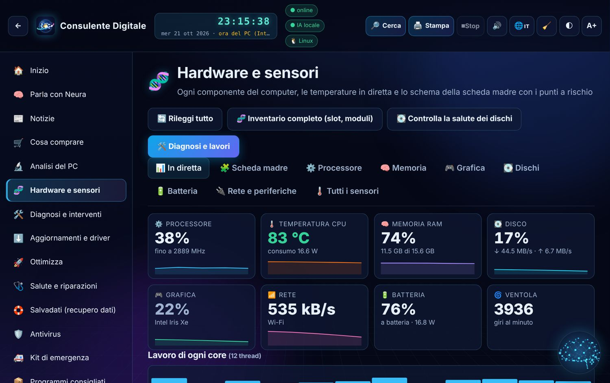
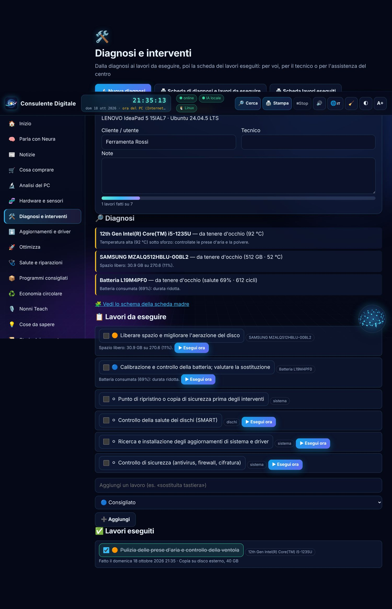
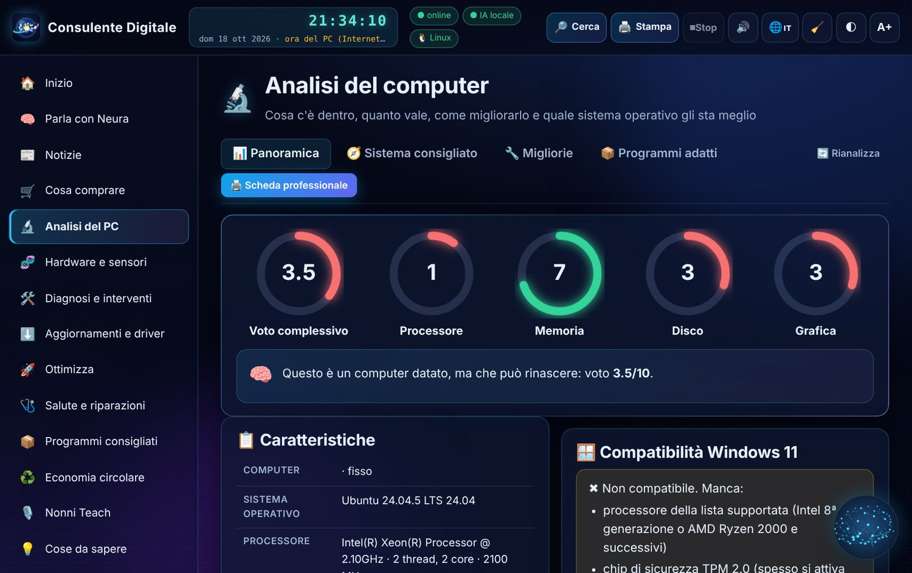
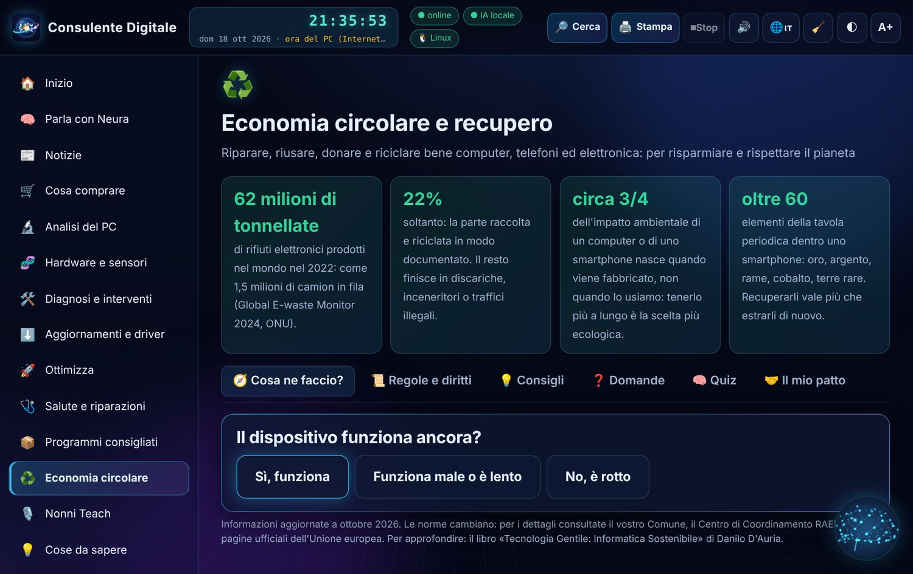

🪟Windows 10 e 11Installatore per l'utente: niente permessi di amministratore · 10.1 MB
SHA-256 5ecb82b579564478a3e536afc70d16b72e200d60d47683bbc751e78e75df13d3🐧Linux (Ubuntu, Mint, Zorin, Debian…)Pacchetto .deb: doppio clic o «sudo apt install ./file.deb» · 9.7 MBSHA-256 ce0b721237fb8d20925ce8a3b49e66adc2d4eb5faa7cf11037dcab21ce76e134🍎macOSApp da trascinare in Applicazioni (primo avvio: tasto destro → Apri) · 11.6 MBSHA-256 76b63902f3645487ce1f6f48c09eefe0c1e588e3a722ee674ecfcd90e62a3def💾Portatile, tutti i sistemiDa chiavetta USB, senza installare · 10.4 MBSHA-256 a350f5ab74929e80cb25a8dcc0357eb7d0eeaec1c2aabc150d2d9ec6dca8a5da📘Vademecum (PDF)Il manuale completo, passo per passo · 11.1 MBSHA-256 c0fc9413d197fde0b82a9d14151bcdd29146279b4c3309ab799b8c9fb3d31555📱 Sul telefono e sul tablet (Android, iPhone, iPad)
Aprite l'app
https://danilodauria.github.io/consulente-digitale/app/
Funziona nel browser, anche senza Internet dopo la prima apertura. Niente account, niente pubblicità.
https://danilodauria.github.io/consulente-digitale/app/
Funziona nel browser, anche senza Internet dopo la prima apertura. Niente account, niente pubblicità.
🤖 Android
In Chrome aprite il link, poi menu ⋮ → Installa app (o «Aggiungi a schermata Home»).
In Chrome aprite il link, poi menu ⋮ → Installa app (o «Aggiungi a schermata Home»).
🍎 iPhone e iPad
In Safari aprite il link, poi Condividi ⬆️ → Aggiungi alla schermata Home.
In Safari aprite il link, poi Condividi ⬆️ → Aggiungi alla schermata Home.
Cosa fa sul telefono
Neura, notizie, cosa comprare e quando, economia circolare, cose da sapere, storia, lingue, backup (.cdbackup). Le azioni sul sistema (aggiornamenti, ottimizzazioni, diagnosi) restano al programma per computer.
Neura, notizie, cosa comprare e quando, economia circolare, cose da sapere, storia, lingue, backup (.cdbackup). Le azioni sul sistema (aggiornamenti, ottimizzazioni, diagnosi) restano al programma per computer.
✨ Novità della versione 1.4.1
- In fondo al menu, sotto «Ideato e sviluppato da Danilo D'Auria», ci sono ora la licenza (un clic apre la pagina della licenza) e la versione del programma, come nel Professore Digitale
🧠 Cosa fa
🧠 Neura
Ascolta, parla e si illumina; con l'intelligenza artificiale locale tutto resta sul vostro computer.
Ascolta, parla e si illumina; con l'intelligenza artificiale locale tutto resta sul vostro computer.
🔬 Analisi e 🧬 hardware
Voti, sistema operativo consigliato, sensori in diretta e schema della scheda madre con i guasti imminenti.
Voti, sistema operativo consigliato, sensori in diretta e schema della scheda madre con i guasti imminenti.
🛠️ Diagnosi e interventi
Lavori da eseguire e lavori fatti, con le schede professionali da stampare.
Lavori da eseguire e lavori fatti, con le schede professionali da stampare.
⬇️ Aggiornamenti e driver
Solo da fonti ufficiali: Windows Update, winget, la vostra distribuzione, Apple, fwupd.
Solo da fonti ufficiali: Windows Update, winget, la vostra distribuzione, Apple, fwupd.
🛒 Cosa comprare e quando
Guida all'acquisto e calendario delle offerte con l'ora esatta dell'INRiM.
Guida all'acquisto e calendario delle offerte con l'ora esatta dell'INRiM.
🎙️ Nonni Teach
Dalla versione 1.4.0 è nel Professore Digitale, dove Neura continua a intervistare i nonni. Ascolta i podcast.
Dalla versione 1.4.0 è nel Professore Digitale, dove Neura continua a intervistare i nonni. Ascolta i podcast.
♻️ Economia circolare
Riparare, riusare, donare, riciclare bene: regole, consigli e quiz.
Riparare, riusare, donare, riciclare bene: regole, consigli e quiz.
💡 Cose da sapere e 📜 storia
Sicurezza, truffe, glossario e la storia dei computer con gli italiani che l'hanno fatta.
Sicurezza, truffe, glossario e la storia dei computer con gli italiani che l'hanno fatta.
📸 Come si presenta







🔒 Sicurezza e privacy
Il programma funziona sul vostro computer, senza account e senza pubblicità. Ogni modifica al sistema parte solo con un vostro clic; Neura chiede il permesso anche per aprire una finestra. Gli aggiornamenti si scaricano solo quando lo chiedete e sono verificati con l'impronta SHA-256 (SHA256SUMS, aggiornamenti.json).
📜 Autore e licenze
Ideato e sviluppato da Danilo D'Auria — autore anche del Professore Digitale, di FeniceOS e del libro «Tecnologia Gentile: Informatica Sostenibile».
Codice sotto licenza MIT; testi, grafica, vademecum e banche dati sotto licenza CC BY-NC-SA 4.0 (attribuzione, non commerciale, condividi allo stesso modo). Codice sorgente su GitHub.